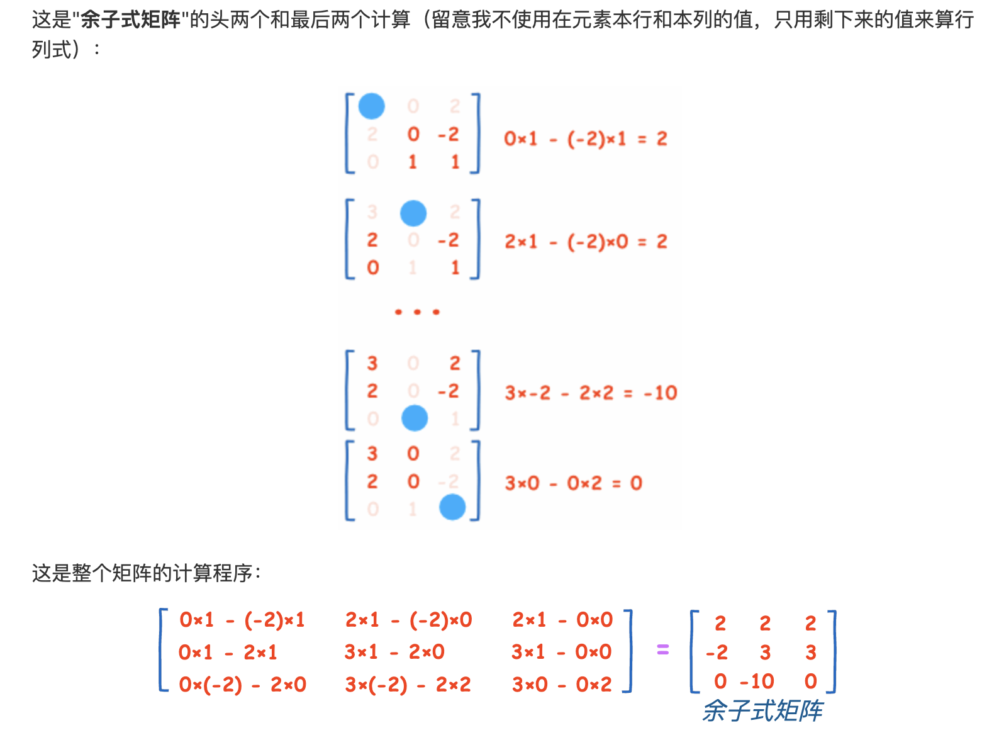

<hr />
<p>title: 共轭转置与转置<br />
 date: 2022-04-07 12:00<br />
count: true<br />
tags:</p>
<ul>
<li>模拟</li>
<li>笔记</li>
<li>矩阵<br />
 category: 模拟笔记</li>
</ul>
<hr />
<h1 id="共轭转置与转置"><a class="anchor" href="#共轭转置与转置">#</a> 共轭转置与转置</h1>
<p></p>
<p></p>
<p></p>
<p><a href="https://zh.wikipedia.org/wiki/%E5%85%B1%E8%BD%AD%E8%BD%AC%E7%BD%AE">共轭转置 - 维基百科，自由的百科全书</a></p>
